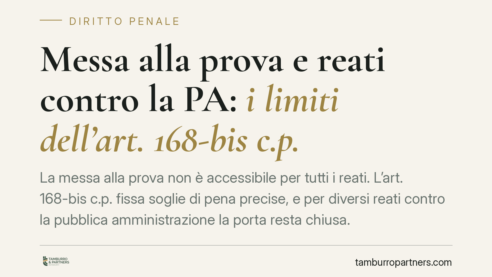

Messa alla prova e reati contro la PA: i limiti dell'art. 168-bis c.p.
La messa alla prova non è accessibile per tutti i reati. L'art. 168-bis c.p. fissa soglie di pena precise, e per diversi reati contro la pubblica amministrazione la porta resta chiusa. Capire quando l'istituto è davvero praticabile è decisivo per impostare la difesa fin dalle prime battute del procedimento.

Che cos'è la messa alla prova
La sospensione del procedimento con messa alla prova (MAP) è un istituto deflattivo ed estintivo introdotto nel codice penale dall'art. 168-bis. In parole semplici: l'imputato chiede di sospendere il processo e di svolgere un programma di trattamento — lavoro di pubblica utilità, condotte riparatorie, eventuale risarcimento del danno. Se la prova ha esito positivo, il reato si estingue. Nessuna condanna, nessuna pena.
L'interesse è evidente. Ma l'accesso non è libero: la legge seleziona i reati ammessi in base alla gravità.
Le due "porte" di accesso
I reati che consentono la MAP sono individuati per due vie.
La prima è quella generale dell'art. 168-bis c.p.: sono ammessi i reati puniti con pena pecuniaria sola o con pena detentiva non superiore nel massimo a quattro anni, sola, congiunta o alternativa alla pena pecuniaria.
La seconda è il rinvio ai reati elencati nell'art. 550, comma 2, c.p.p. — i casi di citazione diretta a giudizio — a prescindere dal limite edittale.
Il criterio dirimente, dunque, è la pena edittale massima vigente al momento del fatto. È su questo dato, e non su valutazioni di opportunità, che si gioca l'ammissibilità.
Perché molti reati contro la PA restano fuori
I reati contro la pubblica amministrazione sono spesso puniti con cornici edittali elevate. Quando il massimo supera i quattro anni e il reato non rientra nell'elenco del 550, comma 2, c.p.p., la MAP non è percorribile. Non per una scelta discrezionale del giudice, ma per una preclusione di sistema.
Due figure meritano chiarezza, perché vengono spesso confuse.
L'art. 353 c.p. — turbata libertà degli incanti — punisce chi altera il regolare svolgimento della gara mediante violenza, minaccia, doni, promesse o collusioni. Riguarda la fase dell'asta pubblica in senso stretto.
L'art. 353-bis c.p. — turbata libertà del procedimento di scelta del contraente — colpisce invece le condotte dirette a condizionare, con gli stessi mezzi, il contenuto del bando o dell'atto equipollente, cioè la fase a monte della gara. È un reato introdotto proprio per coprire manovre che precedono l'incanto.
La distinzione non è teorica: incide sulla qualificazione del fatto, sulla pena applicabile e, di conseguenza, sulla stessa accessibilità a istituti come la MAP.
Il traffico di influenze illecite
Il traffico di influenze illecite (art. 346-bis c.p.) è una figura rimaneggiata dal legislatore negli anni recenti. Chi affronta un procedimento che lo riguarda deve verificare con attenzione quale formulazione e quale cornice di pena fossero in vigore al momento del fatto contestato (verifica *ratione temporis*). Da questo dato dipende l'eventuale accessibilità alla MAP: non si può affermare in astratto un'esclusione o un'ammissione senza accertare la pena edittale applicabile al caso concreto.
Nota: è in corso un dibattito, anche davanti alla Corte costituzionale, sulla ragionevolezza dei limiti di accesso alla MAP per alcuni reati contro la PA. Trattandosi di pronunce la cui portata va verificata negli estremi esatti, suggeriamo di controllare lo stato della giurisprudenza al momento in cui si imposta la strategia difensiva.
Implicazioni pratiche
Per l'imputato il messaggio è netto: se il reato contestato ha un massimo edittale superiore a quattro anni e non figura tra quelli a citazione diretta, puntare sulla MAP può rivelarsi una strada chiusa. Insistervi significa perdere tempo prezioso e, talvolta, precludersi altre opzioni più efficaci.
Esistono infatti alternative processuali da valutare caso per caso:
- il rito abbreviato, che riduce la pena di un terzo ma comporta la rinuncia al dibattimento;
- il patteggiamento (applicazione della pena su richiesta), utile quando c'è margine per contenere la sanzione, con effetti però sul certificato penale;
- il giudizio ordinario, da scegliere quando il materiale probatorio è debole e vi è spazio per un'assoluzione nel merito.
Ognuna comporta vantaggi e rischi diversi: non esiste la via migliore in assoluto, ma quella più adatta al singolo fascicolo.
Cosa fare in concreto
- Verifica la pena edittale massima del reato contestato nella formulazione vigente alla data del fatto: è il primo filtro di ammissibilità alla MAP.
- Controlla se il reato rientra nell'art. 550, comma 2, c.p.p.: in caso affermativo la soglia dei quattro anni non si applica.
- Distingui con precisione la qualificazione tra 353 e 353-bis c.p.: la contestazione corretta cambia la cornice di pena.
- Valuta subito le alternative (abbreviato, patteggiamento, merito) prima di scartarle: la scelta del rito va decisa nelle fasi iniziali.
- Fatti assistere tempestivamente: molte opzioni hanno termini di decadenza legati alla fase processuale.
Contributo informativo a cura di Tamburro & Partners - Avv. Giuseppe Tamburro. Non costituisce parere legale.
Ogni condominio ha una storia a sé.
Se gestisci un'amministrazione e vuoi un confronto su una specifica questione condominiale, scrivi allo studio. Ti rispondiamo entro un giorno lavorativo.